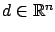
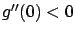
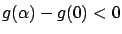
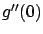
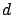
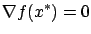
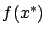

Next: 1.2.1.3 Feasible directions, global
Up: 1.2.1 Unconstrained optimization
Previous: 1.2.1.1 First-order necessary condition
Contents
Index
We now derive another
necessary condition and also a sufficient condition for optimality, under the
stronger hypothesis that  is a
is a
 function (twice continuously differentiable).
function (twice continuously differentiable).
First, we assume as before that  is a local minimum and derive a necessary condition.
For an arbitrary fixed
is a local minimum and derive a necessary condition.
For an arbitrary fixed

,
let us consider a Taylor expansion of
 again,
but this time
include second-order terms:
again,
but this time
include second-order terms:
 |
(1.12) |
where
 |
(1.13) |
By the first-order necessary condition,  must be 0 since it is given
by (1.10).
We claim that
must be 0 since it is given
by (1.10).
We claim that
Indeed, suppose that 
. By (1.13), there exists an
 such that
such that
For these values of  , (1.12) reduces to
, (1.12) reduces to

,
contradicting that fact that 0 is a minimum of  . Therefore, (1.14)
must hold.
. Therefore, (1.14)
must hold.
What does this result imply about the original function
?
To see what

is in terms of
, we need to differentiate
the formula (1.9).
The reader may find it helpful to first rewrite (1.9)
more explicitly as
Differentiating both sides with respect to
, we have
where double subscripts are used to denote second-order partial derivatives.
For  this gives
this gives
or, in matrix notation,
 |
(1.15) |
where
is the Hessian matrix of
.
In view of (1.14), (1.15), and
the fact that 
was arbitrary, we conclude that the matrix
 must be positive semidefinite:
must be positive semidefinite:

(positive semidefinite)
This is the second-order necessary condition for
optimality.
Like the previous first-order necessary condition, this second-order
condition only applies
to the unconstrained case. But, unlike the first-order condition, it requires
to be
and not just
 . Another difference with the first-order
condition is that the second-order condition distinguishes minima from maxima:
at a local maximum, the Hessian must be negative semidefinite,
while the first-order
condition applies to any extremum (a minimum or a maximum).
. Another difference with the first-order
condition is that the second-order condition distinguishes minima from maxima:
at a local maximum, the Hessian must be negative semidefinite,
while the first-order
condition applies to any extremum (a minimum or a maximum).
Strengthening the second-order necessary
condition and combining it with the first-order necessary condition, we can obtain the
following second-order sufficient condition for
optimality: If a
function
satisfies
 and (positive definite) |
(1.16) |
on an interior point
of its domain, then
is a strict local minimum
of
.
To see why this is true, take an arbitrary
and consider again
the second-order expansion (1.12) for
.
We know that
is given by (1.10),
thus it is 0 because
 . Next,
is given
by (1.15), and so we have
. Next,
is given
by (1.15), and so we have
The intuition is that since the Hessian
is a positive definite matrix,
the second-order term dominates the higher-order term
 .
To establish
this fact rigorously, note that by the definition of
we can pick an
small enough so that
.
To establish
this fact rigorously, note that by the definition of
we can pick an
small enough so that
and for these values of
we deduce from (1.17) that

To conclude that
is a
(strict) local minimum, one more technical detail is needed. According to
the definition of a local minimum (see page ![[*]](crossref.gif) ), we must show that
), we must show that

is the lowest value
of
in some ball
around
. But the term
and hence the value
of
 in the above construction
depend on the choice of the direction
. It is clear
that this dependence is continuous, since all the
other terms in (1.17)
are continuous in
.1.2Also, without loss of generality
we can restrict
to be of unit length,
and then we can
take the minimum of
over all such
. Since
the unit sphere in
in the above construction
depend on the choice of the direction
. It is clear
that this dependence is continuous, since all the
other terms in (1.17)
are continuous in
.1.2Also, without loss of generality
we can restrict
to be of unit length,
and then we can
take the minimum of
over all such
. Since
the unit sphere in
 is compact, the minimum is well defined
(thanks to the
Weierstrass Theorem which is discussed below).
This minimal value of
provides the
radius of the desired ball around
in which the lowest value of
is
achieved
at
.
is compact, the minimum is well defined
(thanks to the
Weierstrass Theorem which is discussed below).
This minimal value of
provides the
radius of the desired ball around
in which the lowest value of
is
achieved
at
.
Next: 1.2.1.3 Feasible directions, global
Up: 1.2.1 Unconstrained optimization
Previous: 1.2.1.1 First-order necessary condition
Contents
Index
Daniel
2010-12-20